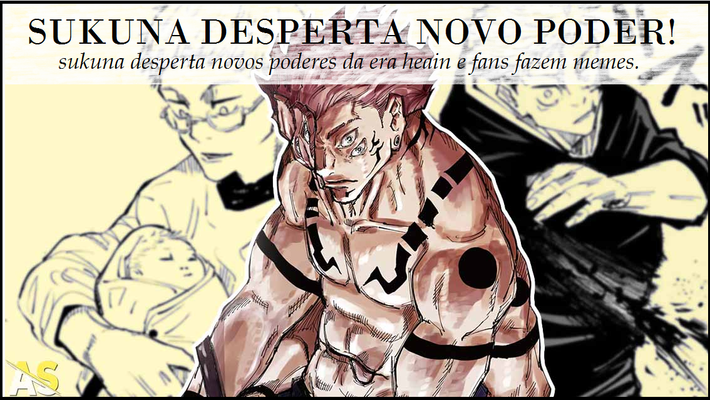
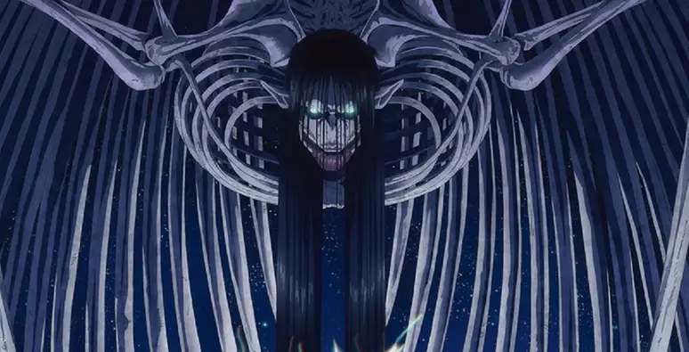
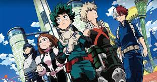

|
|
|
|
|
| cccccccccccccccccc
MELHORES NOTICIAS DOS ANIMES
TUDO SOBRE ANIMES VOCE ENCONTRA AQUI!
|
|
|

|
|
|
|
|

|
ANIME DE SOLO LEVING BATE RECORDES!
O anime "Solo Leveling" está quebrando recordes na plataforma de streaming Crunchyroll.
Com
uma
trama envolvente e personagens cativantes, a série está fazendo história ao receber um
número
recorde de likes por episódio
Os espectadores em todo o mundo estão cada vez mais engajados com as emocionantes
aventuras
e a
|
|
|
animação de alta qualidade de "Solo Leveling". Esse sucesso demonstra o poder e a
influência
da
comunidade de anime. "Solo Leveling" solidifica seu status como um fenômeno global, destacando-se como uma
das
séries
mais populares entre os fãs de anime. O anime continua a cativar o público, consolidando
seu
lugar
no topo das preferências dos espectadores.
|
|
|

|
ATTACK ON TITAN ENCERRA SUA JORNADA ÉPICA!
Após anos de suspense e emoção, o anime "Attack on Titan" finalmente chegou ao seu
desfecho
épico. O
último episódio da série foi lançado, marcando o fim de uma jornada que cativou milhões
de
fãs em
todo o mundo.
Desde o seu lançamento, "Attack on Titan" conquistou uma base de fãs fervorosa,
|
|
impressionando
espectadores com sua narrativa envolvente, personagens complexos e batalhas intensas contra
os
temíveis Titãs. Com o encerramento da série, os fãs se despedem de Eren, Mikasa, Armin e outros
personagens
memoráveis, enquanto refletem sobre o impacto duradouro que "Attack on Titan" teve na
cultura pop e
no mundo dos animes.
Com o encerramento da série, os fãs se despedem de Eren, Mikasa, Armin e outros
personagens
memoráveis, enquanto refletem sobre o impacto duradouro que "Attack on Titan" teve na
cultura pop e
no mundo dos animes.
|
|
|

|
MY HERO ACADEMIA ANUNCIA A 5 TEMPORADA!
Os fãs de "My Hero Academia" estão em êxtase com o lançamento da tão esperada quinta
temporada do
anime. A série, que continua a cativar espectadores com sua emocionante história de
super-heróis e
vilões, promete trazer ainda mais ação e reviravoltas nesta nova fase.
Desde seu início, "My Hero Academia" conquistou
|
|
admiradores em todo o mundo com sua
trama envolvente, personagens carismáticos e intensas batalhas entre os alunos da U.A. High School
e os
vilões da Liga dos Vilões. Com o lançamento da quinta temporada, os fãs estão ansiosos para acompanhar o
desenvolvimento
dos
personagens, aprofundar-se nos mistérios do mundo dos heróis e vibrar com as
emocionantes
reviravoltas que a série sempre proporciona
"My Hero Academia" continua a afirmar seu lugar como um dos animes mais populares da
atualidade,
garantindo sua posição como uma obra-prima do gênero de super-heróis e deixando os fãs
ansiosos por
mais aventuras emocionantes.
|
|